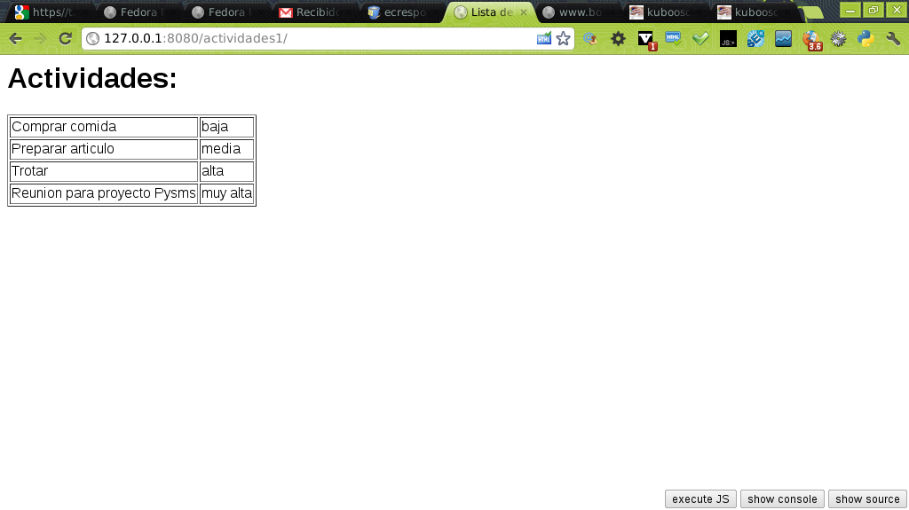

Desplegar información vía web con Django. Parte 3.
Publicado el dom 15 julio 2012 en Tutorial Python • 3 min de lectura
En el artículo anterior se explicó como mostrar un resultado en una página web por medio de Django, ahora se mostrará una serie de información como página html normal y luego usando las plantillas de Django.
La idea es desplegar una serie de actividades mostrando el nivel de prioridad que tiene cada actividad.
Se tiene la vista (views.py) con la función Actividades, esta función retorna un código html con la lista de actividades y su prioridad. Es necesario modificar el archivo urls.py para cuando se coloque el url que se desea visitar (en este caso asociada a actividades), este devuelva el resultado de la función Actividades del archivo views.py.
El código del archivo views.py se muestra a continuación:
from django.http import HttpResponse
def Actividades(request):
return HttpResponse("""
<html>
<head>
<title>Lista de actividades</title>
</head>
<body>
<h1>Actividades:</h1>
<li>Comprar comida</li>
<li>Preparar articulo</li>
<li>Trotar</li>
<li>Reunion para proyecto pysms</li>
</body></html>""")
El código del archivo urls.py se muestra a continuación:
from django.conf.urls import patterns, include, url
import todo.views
urlpatterns = patterns('',
url(r'^actividades/',todo.views.Actividades),
)
Al visitar el url http://127.0.0.1:8080/actividades se muestra la página como aparece en la siguiente figura:

Ahora en vez de insertar código html en la vista se usará plantillas, para ello se crea una función Actividades1 en la vista donde se crea una lista de diccionarios con la información de la actividad y su prioridad, se carga la plantilla index.html, se crea el contexto donde se le pasa la lista de diccionarios de las actividades y se retorna la respuesta HTTP por medio de la plantilla haciendo render del contexto.
A continuación se muestra el código del archivo views.py:
# Create your views here.
from django.http import HttpResponse
from django.template import Context, loader
def Actividades(request):
return HttpResponse("""
<html>
<head>
<title>Lista de actividades</title>
</head>
<body>
<h1>Actividades:</h1>
<li>Comprar comida</li>
<li>Preparar articulo</li>
<li>Trotar</li>
<li>Reunion para proyecto pysms</li>
</body></html>""")
def Actividades1(request):
#Se genera la lista de diccionarios con las actividades y su importancia
actividades = [{'titulo':'Comprar comida','importancia':'baja'},
{'titulo':'Preparar articulo','importancia':'media'},
{'titulo':'Trotar','importancia':'alta'},
{'titulo':'Reunion para proyecto Pysms','importancia':'muy alta'}]
#Se carga el archivo con la plantilla html
t = loader.get_template('index.html')
#Se carga el contexto de las actividades
c = Context({'actividades': actividades,})
#Se envia la respuesta renderizando el contexto a la plantilla
return HttpResponse(t.render(c))
Ahora se agrega una nueva línea al archivo urls.py donde aparece la redirección a actividades1 que usa la función de la vista (views.py) Actividades1:
from django.conf.urls import patterns, include, url
import todo.views
urlpatterns = patterns('',
url(r'^actividades/',todo.views.Actividades),
url(r'^actividades1/',todo.views.Actividades1),
)
Ahora se creará un directorio llamado plantillas dentro de la aplicación pruebas del proyecto pruebas, dentro de ese directorio se crea el archivo index.html con el siguiente contenido:
<html>
<head>
<title>Lista de actividades</title>
<style type="text/css">
body { font-family: Arial, Helvetica, sans-serif;color: black;background: #ffffff; }
</style>
</head>
<body>
<h1>Actividades:</h1>
{% if actividades %}
<table border="1">
{% for actividad in actividades %}
<tr><td>{{actividad.titulo}}</td>
<td>{{actividad.importancia}}</td></tr>
{% endfor %}
</table>
{% else %}
<p>No hay actividades que hacer!</p>
{% endif %}
</body>
</html>
Al salvar el archivo se inicia el servidor de django (python manage.py runserver 8080) y aparece lo siguiente al navegar a http://localhost:8080/actividades1/ :

La aplicación dice que la plantilla no existe, claro faltó modificar el archivo settings.py para que busque la plantilla en la ruta donde se encuentra:
El archivo settings.py debe tener la ruta donde se guardará las plantillas, la configuración de la sección templates se muestra a continuación:
TEMPLATE_DIRS = (
# Put strings here, like "/home/html/django_templates" or "C:/www/django/templates".
# Always use forward slashes, even on Windows.
# Don't forget to use absolute paths, not relative paths.
'/home/ernesto/django/pruebas/pruebas/pruebas/plantillas/'
)
Luego al iniciar el servidor web de Django se obtiene el resultado de la lista de actividades con sus prioridades:

Pueden bajar el archivo comprimido del código en este enlace.
¡Haz tu donativo! Si te gustó el artículo puedes realizar un donativo con Bitcoin (BTC) usando la billetera digital de tu preferencia a la siguiente dirección: 17MtNybhdkA9GV3UNS6BTwPcuhjXoPrSzV
O Escaneando el código QR desde la billetera: